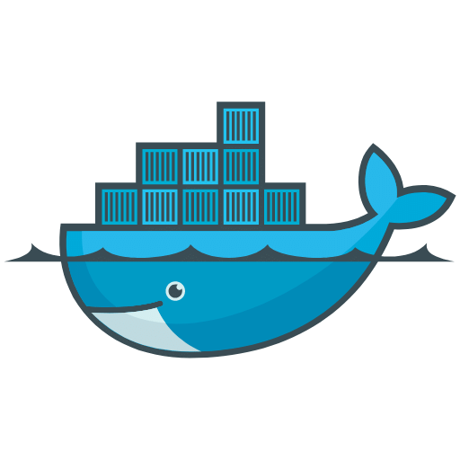
Docker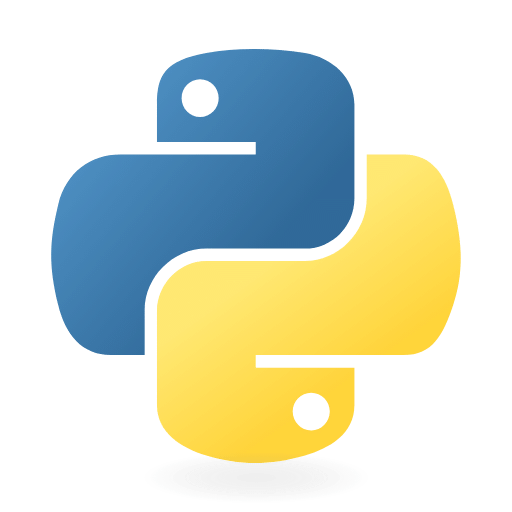
Python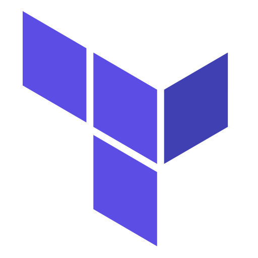
Terraform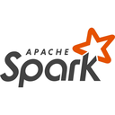
PySpark simulator~10M rows · seeded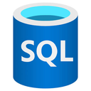
Azure SQLserverless · auto-pause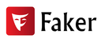
Fakermachines · work orders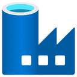
Data Factory metadata-driven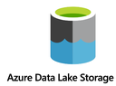
ADLS Gen2landing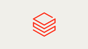
Unity Cataloggrants · lineage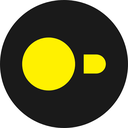
DuckDBsemantic layer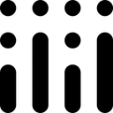
Plotlycharts